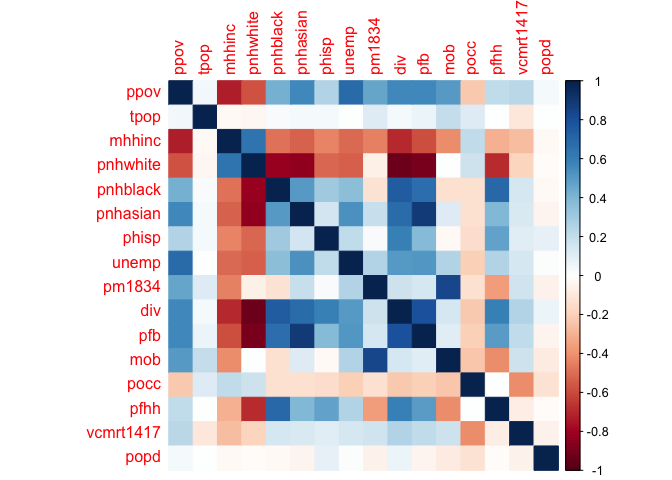
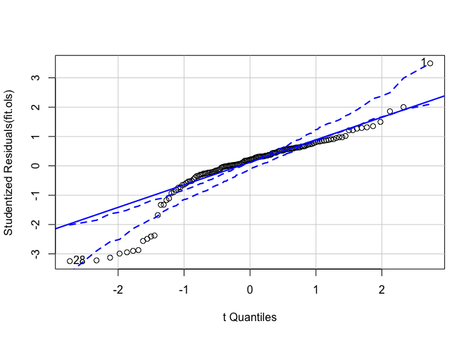
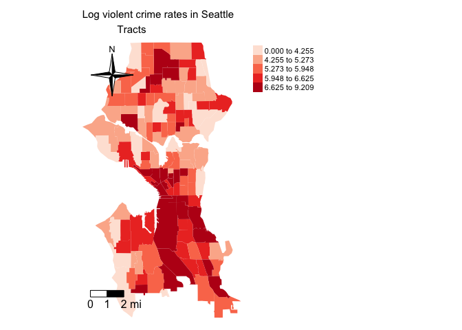
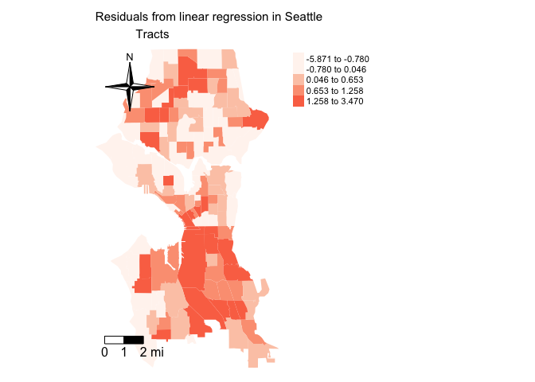

Lab 6: Spatial Regression I
CRD 298 - Spatial Methods in Community Research
Professor Noli Brazil
February 13, 2019
The methods we have been covering up to this point have been descriptive in nature. In this lab, you will be moving from the descriptive to the inferential side of spatial data analysis by learning how to run spatial regression models in R. We focus on how to model spatial dependence both as a nuisance to control for and as a process of theoretical interest. The objectives of the guide are as follows
- Learn how to run a linear regression model
- Learn the process for detecting spatial autocorrelation
- Learn how to run a spatial lag model
- Learn how to run a spatial error model
To help us accomplish these learning objectives, we will examine the association between neighborhood characteristics and violent crime rates (per Federal Bureau of Investigation guidelines, violent crimes are murder and nonnegligent manslaughter, rape, robbery, and aggravated assault) in the City of Seattle, WA.
This lab guide assumes working knowledge of basic concepts in linear regression modelling. If you need a brushing up on linear regression modelling concepts and terms, please see this week’s handout and Chapters 3 and 4 in Gelman and Hill.
Load necessary packages
We’ll be introducing the following packages in this lab
install.packages("broom")
install.packages("corrplot")
install.packages("car")
install.packages("olsrr")
install.packages("stargazer")
install.packages("knitr")You may have already installed knitr in the past if you’ve been using the function kable() to create presentation ready tables in your html documents.
Load in the following packages, all of which we’ve covered in previous labs
library(sf)
library(tidyverse)
library(sp)
library(tmap)
library(spdep)Bring in the data
We will be using the shape file seattle_census_tracts_2010.shp. This file contains violent crime rates between 2014 and 2017 by census tract. It also contains demographic and socioeconomic data from the 2012-16 American Community Survey. The record layout for the shapefile’s attribute table is located here.
I zipped up the files associated with the shapefile onto Github. Download the file, unzip it, and bring it into R using the following code.
setwd("insert your pathway here")
download.file(url = "https://raw.githubusercontent.com/crd230/data/master/seattle_census_tracts_2010.zip", destfile = "seattle_census_tracts_2010.zip")
unzip(zipfile = "seattle_census_tracts_2010.zip")
sea.tracts <- st_read("seattle_census_tracts_2010.shp")Standard linear regression
We’re interested in examining the neighborhood characteristics associated with violent crime rates in Seattle. What explanatory variables should we include? An important determining factor is to make sure we do not pick variables that are highly correlated. In regression, this is known as multicollinearity, and is a problem because the partial regression coefficient for any collinear variable is highly unstable.
One way to detect multicollinearity is to view a correlation matrix. Let’s produce a correlation matrix of the candidate variables using the function cor(). The function does not directly take in spatial objects. We use the function st_geometry() in the following way to make the spatial data set not spatial.
sea.tracts.df <- sea.tracts
st_geometry(sea.tracts.df) <- NULLThe way to read the above is code is that st_geometry() calls up the geometry of sea.tracts.df, which we then set to NULL. This removes the geometry and makes sea.tracts.df a non-spatial data frame.
class(sea.tracts.df)We then select the variables we want to calculate correlations for and feed the resulting pared down data frame into the cor() function.
corrMat <- sea.tracts.df %>%
select(ppov:pfhh, vcmrt1417,popd) %>%
cor()
corrMat## ppov tpop mhhinc pnhwhite pnhblack
## ppov 1.00000000 0.041576357 -0.72997644 -0.576247612 0.42449864
## tpop 0.04157636 1.000000000 -0.02367974 -0.031709181 0.02823612
## mhhinc -0.72997644 -0.023679744 1.00000000 0.645176496 -0.48295953
## pnhwhite -0.57624761 -0.031709181 0.64517650 1.000000000 -0.81281986
## pnhblack 0.42449864 0.028236119 -0.48295953 -0.812819855 1.00000000
## pnhasian 0.56619989 0.037426912 -0.52348530 -0.831337854 0.50564332
## phisp 0.25789639 0.032021981 -0.43908005 -0.514871654 0.30639225
## unemp 0.68030188 0.004486756 -0.50780424 -0.534437251 0.36104147
## pm1834 0.46818852 0.118217856 -0.44579424 -0.063187369 -0.12245627
## div 0.56374118 0.039985830 -0.69553859 -0.921135459 0.74842294
## pfb 0.56982293 0.064708411 -0.58719797 -0.895337638 0.66716581
## mob 0.50115587 0.202842669 -0.41735437 0.008336732 -0.13048745
## pocc -0.22457586 0.110261400 0.21139029 0.178339014 -0.13365671
## pfhh 0.21496873 0.008354680 -0.30230602 -0.688882452 0.69439479
## vcmrt1417 0.23841814 -0.102752503 -0.26027001 -0.183984231 0.14911326
## popd 0.03195487 0.006678511 -0.02550528 -0.018556868 -0.02428409
## pnhasian phisp unemp pm1834 div
## ppov 0.56619989 0.25789639 0.680301876 0.46818852 0.56374118
## tpop 0.03742691 0.03202198 0.004486756 0.11821786 0.03998583
## mhhinc -0.52348530 -0.43908005 -0.507804239 -0.44579424 -0.69553859
## pnhwhite -0.83133785 -0.51487165 -0.534437251 -0.06318737 -0.92113546
## pnhblack 0.50564332 0.30639225 0.361041466 -0.12245627 0.74842294
## pnhasian 1.00000000 0.15111631 0.533306092 0.19957684 0.67152942
## phisp 0.15111631 1.00000000 0.212272193 0.02473400 0.59918752
## unemp 0.53330609 0.21227219 1.000000000 0.25846620 0.50761717
## pm1834 0.19957684 0.02473400 0.258466199 1.00000000 0.17860792
## div 0.67152942 0.59918752 0.507617168 0.17860792 1.00000000
## pfb 0.88104358 0.38060593 0.514856320 0.14405408 0.79014331
## mob 0.11743552 -0.02980207 0.250659072 0.83821530 0.14002677
## pocc -0.13373592 -0.14789776 -0.206689302 -0.13451408 -0.22661912
## pfhh 0.39333848 0.47039787 0.250799137 -0.36406424 0.59924748
## vcmrt1417 0.13309873 0.10089597 0.140269432 0.16687085 0.25166012
## popd -0.04031585 0.08747867 0.017220958 -0.05674208 0.06397972
## pfb mob pocc pfhh vcmrt1417
## ppov 0.56982293 0.501155867 -0.224575856 0.214968733 0.23841814
## tpop 0.06470841 0.202842669 0.110261400 0.008354680 -0.10275250
## mhhinc -0.58719797 -0.417354367 0.211390292 -0.302306017 -0.26027001
## pnhwhite -0.89533764 0.008336732 0.178339014 -0.688882452 -0.18398423
## pnhblack 0.66716581 -0.130487446 -0.133656714 0.694394789 0.14911326
## pnhasian 0.88104358 0.117435520 -0.133735918 0.393338485 0.13309873
## phisp 0.38060593 -0.029802065 -0.147897759 0.470397872 0.10089597
## unemp 0.51485632 0.250659072 -0.206689302 0.250799137 0.14026943
## pm1834 0.14405408 0.838215302 -0.134514083 -0.364064241 0.16687085
## div 0.79014331 0.140026775 -0.226619124 0.599247483 0.25166012
## pfb 1.00000000 0.101751651 -0.208109912 0.498920065 0.21374976
## mob 0.10175165 1.000000000 -0.231309533 -0.411501184 0.17814429
## pocc -0.20810991 -0.231309533 1.000000000 0.003197837 -0.41233114
## pfhh 0.49892006 -0.411501184 0.003197837 1.000000000 -0.07413971
## vcmrt1417 0.21374976 0.178144294 -0.412331143 -0.074139713 1.00000000
## popd -0.04079050 -0.083710869 -0.123616410 -0.011969695 -0.05113622
## popd
## ppov 0.031954873
## tpop 0.006678511
## mhhinc -0.025505275
## pnhwhite -0.018556868
## pnhblack -0.024284086
## pnhasian -0.040315852
## phisp 0.087478665
## unemp 0.017220958
## pm1834 -0.056742082
## div 0.063979722
## pfb -0.040790497
## mob -0.083710869
## pocc -0.123616410
## pfhh -0.011969695
## vcmrt1417 -0.051136222
## popd 1.000000000That’s a lot of numbers. Let’s visualize this matrix using a correlation plot. We do this using the function corrplot() in the the corrplot package, which we need to load in.
library(corrplot)corrplot(corrMat, method="color")
We find a lot of highly correlated variables. But, which ones do we choose? Let theory and prior empirical research guide you. Fortunately for us, there is substantive theoretical and empirical work discussing the structural neighborhood characteristics associated with the prevalence of crime. Let’s draw from this literature (for example, see Hipp (2010) and Sampson et al. (1997)) to select the variables to include in the explanatory model.
Criminological studies typically incorporate measures of concentrated disadvantage, residential mobility, immigrant concentration, levels of racial/ethnic heterogeneity, and aspects of the built environment. How do we measure these concepts? We covered concentrated disadvantage in Week 4 (% of households on public assistance, percent poverty, unemployment rate, percent of female-headed households, percent non-Hispanic black, and percent of residents under 18 years old). Immigrant concentration can be measured by percent Hispanic and percent foreign-born. Following the methods used in Morenoff et al. (2001), we will standardize each of the variables, sum the resulting z-scores, and then divide by the number of variables in order to construct a scale of concentrated disadvantage and immigrant concentration. This produces a composite measure that evenly weights each of the original variables. We can do this using the following code, which follows closely the code we used when creating opportunity indices in Lab 4.
sea.tracts.std <-sea.tracts.df %>%
select(GEOID10, ppov, unemp, pnhblack, pund18, pwelfare, pfb, phisp) %>%
gather(variable, value, -c(GEOID10)) %>%
group_by(variable) %>%
mutate(mean = mean(value), sd = sd(value), z = (value-mean)/sd) %>%
select(-(c(value, mean, sd))) %>%
spread(variable, z) %>%
mutate(concd = (ppov+unemp+pnhblack+pund18+pwelfare)/5, immc = (pfb+phisp)/2) %>%
select(GEOID10, concd, immc)
sea.tracts <- left_join(sea.tracts, sea.tracts.std, by = "GEOID10")Racial/ethnic heterogeneity is measured by the Herfindahl index (see, for example, page 666 in this article). We also include the variables mob pocc, and popd in the model. Regress lvcmrt1417 (log average yearly violent crime rates 2014-2017) on these variables using the lm() function.
fit.ols <- lm(lvcmrt1417 ~ concd + mob + pocc + immc + popd + div,
data = sea.tracts)The first argument in lm() takes on a formula object. A formula is indicated by a tilde. The dependent variable lvcmrt1417 comes first, followed by the tilde ~, and then the independent variables separated by +. The function lm() fits linear models. You can run generalized linear models, which allows you to run different types of regression models (e.g. logit) including the basic linear model you run using lm(), using the function glm().
We can look at a summary of results using the summary() function
summary(fit.ols)##
## Call:
## lm(formula = lvcmrt1417 ~ concd + mob + pocc + immc + popd +
## div, data = sea.tracts)
##
## Residuals:
## Min 1Q Median 3Q Max
## -5.8710 -0.4994 0.3924 1.1388 3.4698
##
## Coefficients:
## Estimate Std. Error t value Pr(>|t|)
## (Intercept) 3.8351930 5.3963313 0.711 0.47851
## concd -0.0683434 0.3932643 -0.174 0.86230
## mob 4.4693388 1.5950932 2.802 0.00584 **
## pocc -0.2609372 5.5270811 -0.047 0.96242
## immc 0.0507213 0.3649737 0.139 0.88968
## popd -0.0015659 0.0005553 -2.820 0.00554 **
## div 1.4279538 2.0600280 0.693 0.48941
## ---
## Signif. codes: 0 '***' 0.001 '**' 0.01 '*' 0.05 '.' 0.1 ' ' 1
##
## Residual standard error: 1.927 on 133 degrees of freedom
## Multiple R-squared: 0.1436, Adjusted R-squared: 0.105
## F-statistic: 3.717 on 6 and 133 DF, p-value: 0.001893We can make the results look “tidy” by using the function tidy() in the broom package
library(broom)
tidy(fit.ols)## # A tibble: 7 x 5
## term estimate std.error statistic p.value
## <chr> <dbl> <dbl> <dbl> <dbl>
## 1 (Intercept) 3.84 5.40 0.711 0.479
## 2 concd -0.0683 0.393 -0.174 0.862
## 3 mob 4.47 1.60 2.80 0.00584
## 4 pocc -0.261 5.53 -0.0472 0.962
## 5 immc 0.0507 0.365 0.139 0.890
## 6 popd -0.00157 0.000555 -2.82 0.00554
## 7 div 1.43 2.06 0.693 0.489It appears that population density decreases crime - Jane Jacobs’ more eyes on the street - whereas residential mobility increases crime.
Diagnostic tests
R has some useful commands for running diagnostics to see if our regression model has some problems, specifically if it’s breaking any of the OLS standard assumptions. First, we can verify whether multicollinearity is still a problem by calculating Variance Inflation Factors (VIF). The higher a variable’s VIF, the more collinear it is with one or more variables in the model. Use the vif() function in the car package
library(car)vif(fit.ols)## concd mob pocc immc popd div
## 2.557800 1.177415 1.130534 3.441351 1.041359 4.777150A variable with a VIF generally above 10 is considered to be too high. Looks like were good! yay.
One assumption of linear regression is that errors are normally distributed. We can visually inspect for violations of this assumption through a quantile-quantile (Q-Q) plot, which plots the quantile of the residuals against the expected quantile of the standard normal distribution.
#QQ plot
qqPlot(fit.ols)
## [1] 1 28The above figure is a quantile-comparison plot, graphing for each observation its fit.ols model residual on the y axis and the corresponding quantile in the t-distribution on the x axis. The dashed lines indicate 95% confidence intervals calculated under the assumption that the errors are normally distributed. If any observations fall outside this range, this is an indication that the normality assumption has been violated.
The function shapiro.test() runs the Shapiro-Wilk Test, a formal test of normality
shapiro.test(resid(fit.ols))##
## Shapiro-Wilk normality test
##
## data: resid(fit.ols)
## W = 0.86162, p-value = 4.029e-10The function resid() extracts the residuals (Predicted Y minus Actual Y) from the linear regression model saved in fit.ols.
Want more tests of normality?There is the Kolmogorov-Smirnov test
ks.test(resid(fit.ols), y = pnorm)##
## One-sample Kolmogorov-Smirnov test
##
## data: resid(fit.ols)
## D = 0.17707, p-value = 0.0003078
## alternative hypothesis: two-sidedwhere y = pnorm specifies the null distribution, in this case normal. What does the Q-Q plot and the tests for normality suggest?
Another assumption is that errors are homeskedastic - that is the variance of residuals are constant. You can plot the residuals to explore the presence of heteroskedasticity. If we see the spread of the points narrow or widen from left to right, heteroskedasticity is present.
#plot residuals
plot(resid(fit.ols))
There are formal statistical tests to check for heteroscedasticity. One such test is the Breusch-Pagan test, which is located in the lmtest package.
library(lmtest)
bptest(fit.ols)##
## studentized Breusch-Pagan test
##
## data: fit.ols
## BP = 18.069, df = 6, p-value = 0.006062What did you find?
Exploratory spatial data analysis
The above sections go through the steps conducted in non spatial regression analysis. The focus of this lab, however, is to account for spatial dependence in the error term and the dependent variable. Before doing any kind of spatial modelling, you should conduct an Exploratory Spatial Data Analysis (ESDA) to gain an understanding of how your data are spatially structured.
Map your data
The first step in ESDA is to map your dependent variable. Map the log average violent crime rate per 100,000 residents.
tm_shape(sea.tracts, unit = "mi") +
tm_polygons(col = "lvcmrt1417", style = "quantile",palette = "Reds",
border.alpha = 0, title = "") +
tm_scale_bar(breaks = c(0, 1, 2), size = 1, position = c("left", "bottom")) +
tm_compass(type = "4star", position = c("left", "top")) +
tm_layout(main.title = "Log violent crime rates in Seattle
Tracts", main.title.size = 0.95, frame = FALSE, legend.outside = TRUE)
Next, you’ll want to map the residuals from your regression model. To extract the residuals from fit.ols, use the resid() function. Save it back into sea.tracts.
sea.tracts <- mutate(sea.tracts, olsresid = resid(fit.ols))Plot it
tm_shape(sea.tracts, unit = "mi") +
tm_polygons(col = "olsresid", style = "quantile",palette = "Reds",
border.alpha = 0, title = "") +
tm_scale_bar(breaks = c(0, 1, 2), size = 1, position = c("left", "bottom")) +
tm_compass(type = "4star", position = c("left", "top")) +
tm_layout(main.title = "Residuals from linear regression in Seattle
Tracts", main.title.size = 0.95, frame = FALSE, legend.outside = TRUE)
Global Moran’s I
There appears to be evidence of clustering from the exploratory maps. What does our buddy the Moran’s I tell us? First, we need to convert sea.tracts to an sp object.
sea.tracts.sp <- as(sea.tracts, "Spatial")Then create a neighbor object and its associated spatial weights matrix. Let’s use the standard Queen contiguity.
seab<-poly2nb(sea.tracts.sp, queen=T)
seaw<-nb2listw(seab, style="W", zero.policy = TRUE)Examine the Moran scatterplot.
moran.plot(sea.tracts.sp$lvcmrt1417, listw=seaw, xlab="Standardized Log Violent Crime Rate", ylab="Standardized Lagged Log Viiolent Crime Rate",
main=c("Moran Scatterplot for Log Violent Crime Rate", "in Seatte") )
Finally, the Global Moran’s I
moran.mc(sea.tracts.sp$lvcmrt1417, seaw, nsim=999)##
## Monte-Carlo simulation of Moran I
##
## data: sea.tracts.sp$lvcmrt1417
## weights: seaw
## number of simulations + 1: 1000
##
## statistic = 0.37384, observed rank = 1000, p-value = 0.001
## alternative hypothesis: greaterRepeat for the residuals using the lm.morantest() function
lm.morantest(fit.ols, seaw)##
## Global Moran I for regression residuals
##
## data:
## model: lm(formula = lvcmrt1417 ~ concd + mob + pocc + immc + popd
## + div, data = sea.tracts)
## weights: seaw
##
## Moran I statistic standard deviate = 5.5829, p-value = 1.183e-08
## alternative hypothesis: greater
## sample estimates:
## Observed Moran I Expectation Variance
## 0.267708587 -0.019089365 0.002638935You should use other spatial weight matrices to test the robustness of your ESDA results. For example, do you get similar results when using a 3-nearest neighbor definition? What about a 2000 meter distance based matrix? How about a 2000 meter distance based matrix with inverse distance weights?
Spatial lag model
Based on the exploratory mapping, Moran scatterplot, and the Moran’s I, there appears to be spatial autocorrelation in the dependent variable. This means that if there is a spatial lag process going on and we fit an OLS model our coefficients will be biased and inefficient. That is, the coefficient size and sign are not close to their true value and its standard errors are underestimated. This means trouble, big trouble, real big trouble.
A spatial lag model can be estimated in R using the command lagsarlm(), which is in the spdep package. Let’s go with a Queen contiguity spatial weights matrix. One potential motivation for using Queen contiguity is that the city is physically separated by a body of water. Plotting the Queen contiguity neighborhood connections, we find no connections across Lake Union going west to Puget Sound and east to Lake Washington because the neighborhoods are not physically connected (or they are but only via bridges).
sea.coords <- coordinates(sea.tracts.sp)
plot(sea.tracts.sp, border = "grey60")
plot(seaw, coords = sea.coords, add=T, col=2)
If we use a 2000 m distance band, we get connections, as seen in the following map.

Some have argued that physical barriers like highways and lakes create natural neighborhood boundaries (Kramer 2018). This is an example of how one should think very carefully about how to define neighbors in a spatial analysis. Are those neighborhoods across Lake Union “connected”?
Let’s fit the spatial lag model
fit.lag<-lagsarlm(lvcmrt1417 ~ concd + mob + pocc + immc + popd + div +pnhblack,
data = sea.tracts, listw = seaw)
summary(fit.lag)##
## Call:lagsarlm(formula = lvcmrt1417 ~ concd + mob + pocc + immc + popd +
## div + pnhblack, data = sea.tracts, listw = seaw)
##
## Residuals:
## Min 1Q Median 3Q Max
## -4.83726 -0.55279 0.30206 0.97785 3.73405
##
## Type: lag
## Coefficients: (asymptotic standard errors)
## Estimate Std. Error z value Pr(>|z|)
## (Intercept) 1.00383088 4.62917264 0.2168 0.82833
## concd -0.07542595 0.40688686 -0.1854 0.85294
## mob 3.17302815 1.45574071 2.1797 0.02928
## pocc 0.42652900 4.72143846 0.0903 0.92802
## immc 0.16953408 0.32309875 0.5247 0.59978
## popd -0.00066296 0.00048075 -1.3790 0.16789
## div 0.19110001 1.98958374 0.0961 0.92348
## pnhblack 0.84348609 3.19232138 0.2642 0.79161
##
## Rho: 0.55191, LR test value: 27.277, p-value: 1.7628e-07
## Asymptotic standard error: 0.086442
## z-value: 6.3848, p-value: 1.716e-10
## Wald statistic: 40.766, p-value: 1.716e-10
##
## Log likelihood: -273.1829 for lag model
## ML residual variance (sigma squared): 2.6973, (sigma: 1.6424)
## Number of observations: 140
## Number of parameters estimated: 10
## AIC: 566.37, (AIC for lm: 591.64)
## LM test for residual autocorrelation
## test value: 2.1681, p-value: 0.1409The only real difference between the code for lm() and lagsarlm() is the argument listw, which you use to specify the spatial weights matrix.
Let’s calculate the Moran’s I on the model’s residuals
moran.mc(resid(fit.lag), seaw, nsim=999)##
## Monte-Carlo simulation of Moran I
##
## data: resid(fit.lag)
## weights: seaw
## number of simulations + 1: 1000
##
## statistic = -0.027722, observed rank = 374, p-value = 0.626
## alternative hypothesis: greaterSpatial error model
The spatial error model incorporates spatial dependence in the errors. If there is a spatial error process going on and we fit an OLS model our coefficients will be unbiased but inefficient. That is, the coefficient size and sign are asymptotically correct but its standard errors are underestimated.
We can estimate a spatial error model in R using the command errorsarlm() also in the spdep package.
fit.err<-errorsarlm(lvcmrt1417 ~ concd + mob + pocc + immc + popd + div +pnhblack,
data = sea.tracts, listw = seaw)
summary(fit.err)##
## Call:errorsarlm(formula = lvcmrt1417 ~ concd + mob + pocc + immc +
## popd + div + pnhblack, data = sea.tracts, listw = seaw)
##
## Residuals:
## Min 1Q Median 3Q Max
## -5.05103 -0.53563 0.23645 1.06351 3.52178
##
## Type: error
## Coefficients: (asymptotic standard errors)
## Estimate Std. Error z value Pr(>|z|)
## (Intercept) 4.01348889 4.37971215 0.9164 0.3595
## concd 0.08451506 0.45104334 0.1874 0.8514
## mob 2.48138004 1.83221252 1.3543 0.1756
## pocc 0.11809722 4.58373082 0.0258 0.9794
## immc 0.31587004 0.33957270 0.9302 0.3523
## popd -0.00056011 0.00047213 -1.1863 0.2355
## div 0.80469055 2.16560090 0.3716 0.7102
## pnhblack -0.77447714 3.45762071 -0.2240 0.8228
##
## Lambda: 0.59098, LR test value: 25.823, p-value: 3.7412e-07
## Asymptotic standard error: 0.083722
## z-value: 7.0588, p-value: 1.6791e-12
## Wald statistic: 49.827, p-value: 1.679e-12
##
## Log likelihood: -273.9097 for error model
## ML residual variance (sigma squared): 2.6911, (sigma: 1.6405)
## Number of observations: 140
## Number of parameters estimated: 10
## AIC: 567.82, (AIC for lm: 591.64)And the Moran’s I of the residuals
moran.mc(resid(fit.err), seaw, nsim=999)##
## Monte-Carlo simulation of Moran I
##
## data: resid(fit.err)
## weights: seaw
## number of simulations + 1: 1000
##
## statistic = -0.020788, observed rank = 416, p-value = 0.584
## alternative hypothesis: greaterPresenting your results
An organized table of results is an essential component not just in academic papers, but in any professional report or presentation. Up till this point, we’ve been reporting results by simply printing objects, like the following
fit.olsWe used the function tidy() above to create a tibble of modelling results. We can make these results prettier by using a couple of functions for making nice tables in R. First, there is the kable() function from the knitr package.
library(knitr)kable(tidy(fit.ols))| term | estimate | std.error | statistic | p.value |
|---|---|---|---|---|
| (Intercept) | 3.8351930 | 5.3963313 | 0.7107038 | 0.4785123 |
| concd | -0.0683434 | 0.3932643 | -0.1737850 | 0.8622986 |
| mob | 4.4693388 | 1.5950932 | 2.8019296 | 0.0058389 |
| pocc | -0.2609372 | 5.5270811 | -0.0472107 | 0.9624161 |
| immc | 0.0507213 | 0.3649737 | 0.1389724 | 0.8896821 |
| popd | -0.0015659 | 0.0005553 | -2.8199563 | 0.0055385 |
| div | 1.4279538 | 2.0600280 | 0.6931720 | 0.4894103 |
There are options to control the number of digits, whether row names are included or not, column alignment, and other options that depend on the output type.
The table produced by kable()looks good. But what if we want to present results for more than one model, such as presenting fit.ols, fit.lag, and fit.err side by side? We can use the stargazer() function from the stargazer package to do this.
library(stargazer, quietly = TRUE)
stargazer(fit.ols, fit.lag, fit.err, type = "html",
title="Title: Regression Results")| Dependent variable: | |||
| lvcmrt1417 | |||
| OLS | spatial | spatial | |
| autoregressive | error | ||
| (1) | (2) | (3) | |
| concd | -0.068 | -0.075 | 0.085 |
| (0.393) | (0.407) | (0.451) | |
| mob | 4.469*** | 3.173** | 2.481 |
| (1.595) | (1.456) | (1.832) | |
| pocc | -0.261 | 0.427 | 0.118 |
| (5.527) | (4.721) | (4.584) | |
| immc | 0.051 | 0.170 | 0.316 |
| (0.365) | (0.323) | (0.340) | |
| popd | -0.002*** | -0.001 | -0.001 |
| (0.001) | (0.0005) | (0.0005) | |
| div | 1.428 | 0.191 | 0.805 |
| (2.060) | (1.990) | (2.166) | |
| pnhblack | 0.843 | -0.774 | |
| (3.192) | (3.458) | ||
| Constant | 3.835 | 1.004 | 4.013 |
| (5.396) | (4.629) | (4.380) | |
| Observations | 140 | 140 | 140 |
| R2 | 0.144 | ||
| Adjusted R2 | 0.105 | ||
| Log Likelihood | -273.183 | -273.910 | |
| sigma2 | 2.697 | 2.691 | |
| Akaike Inf. Crit. | 566.366 | 567.819 | |
| Residual Std. Error | 1.927 (df = 133) | ||
| F Statistic | 3.717*** (df = 6; 133) | ||
| Wald Test (df = 1) | 40.766*** | 49.827*** | |
| LR Test (df = 1) | 27.277*** | 25.823*** | |
| Note: | p<0.1; p<0.05; p<0.01 | ||
There are a number of options you can tweak to make the table more presentation ready, such as adding footnotes and changing column and row labels.
Note three things: First, if you ran the stargazer() function above directly in your R console, you’ll get output that won’t make sense. Knit the document and you’ll see your pretty table. Second, you’ll need to add the argument quietly = TRUE when you load stargazer into your current R session. Third, you will need to add results = 'asis' as an RMarkdown chunk option.
Which model? OLS, Spatial lag, or Spatial error?
As we discussed in this week’s handout, there are many fit statistics and tests to determine which model is most appropriate. A popular set of tests proposed by Anselin (1988) (also see Anselin et al. 1996) are the Lagrange Multiplier (LM) tests. The null in these tests is the OLS model. A test showing statistical significance rejects this null.
In general, you fit the OLS model to your dependent variable, then submit the OLS model fit to the LM testing procedure. Then go through the series of steps I outlined in this week’s handout.
To run the LM tests in R, use the lm.LMtests() command in the spdep package. Run this command and interpret the results. Which model is “best”? Why?
The LM test is not the only way to select between models. We’ll go through a couple of other methods in next week’s lecture and lab.
Website created and maintained by Noli Brazil